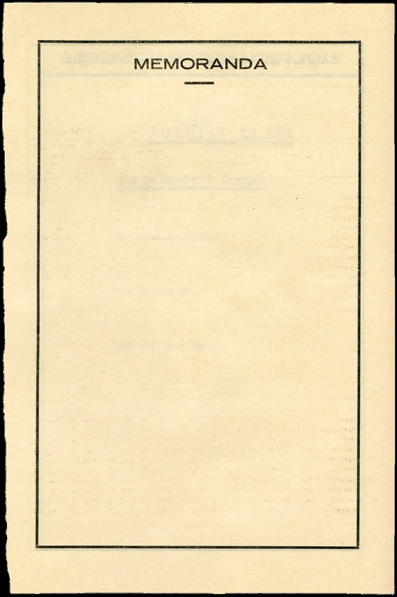

Instructional Design
New Faculty Orientation Handbook
Designed and wrote a comprehensive orientation handbook for incoming faculty, consolidating policies, procedures, and resources from five departments into a single navigable document. Applied UDL principles and clear information architecture throughout.
Adobe InDesign
Technical Writing
UDL
Information Architecture
View Case Study